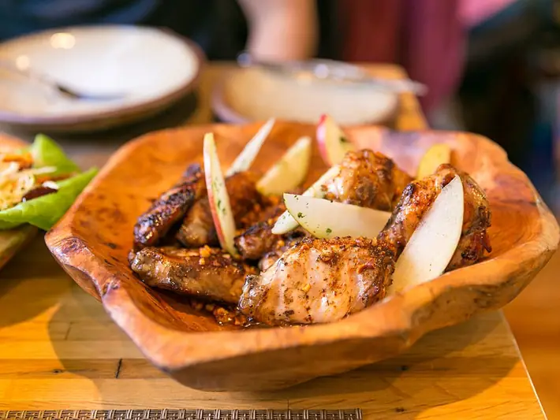

Фото: City Foodsters, CC BY 2.0
.jpg){kind=link}
Куриные крылья в медово-соевом соусе
Крылышки в липкой сладко-солёной глазури из духовки
70 мин4 порц.544 ккал на порциюБ 49 · Ж 34 · У 10Азиатская кухня
Продукты на 4 порц.
- Куриные крылья20 шт
- Соевый соус4 ст. л.
- Мёд1,5 ст. л.
- Чеснок2 зуб.
- Имбирь по желанию2 ч. л.
- Растительное масло1 ст. л.
- Перец чёрный молотый1 щеп.
- Кунжут по желанию2 ч. л.
Как готовить
- Крылья промокните полотенцем. Кончики крыльев можно отрезать, они быстро подгорают.
- Смешайте соевый соус, мёд, масло, перец, раздавленный чеснок и тёртый имбирь.
- Залейте крылья маринадом, перемешайте и оставьте на 20 минут.
- Выложите крылья на противень с бумагой в один слой. Маринад не выливайте.
- Запекайте 20 минут при 200 °C (сильный жар), затем смажьте оставшимся маринадом и переверните.
- Запекайте ещё 15-20 минут до тёмно-золотистой блестящей корочки. Сок у кости должен быть прозрачным.
- Посыпьте кунжутом сразу после духовки.
Совет. Соль не нужна: соевого соуса достаточно. Если глазурь начинает чернеть раньше времени, накройте противень фольгой.